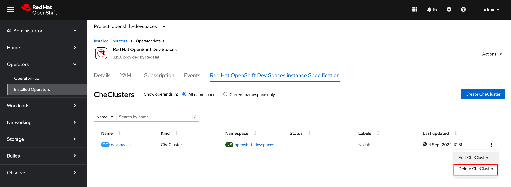
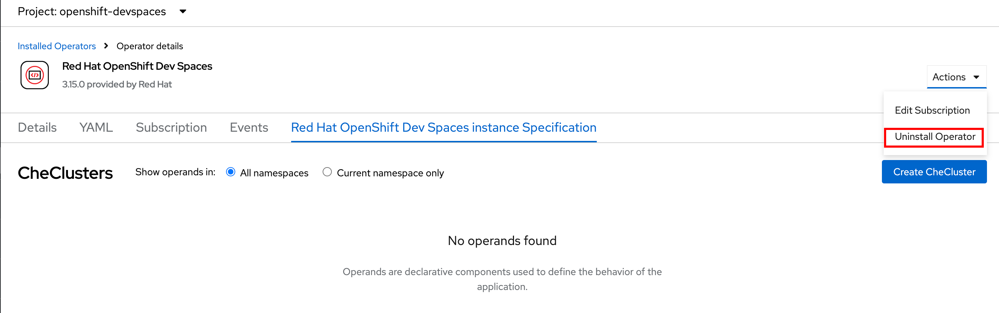

Uninstalling Red Hat OpenShift Dev Spaces
Uninstallation using dsc CLI
You can clean up all operator provisioned resources using a single dsc CLI command with the --delete-all and --delete-namespace flag with the namespace where you installed Dev Spaces:
$ dsc server:delete --delete-all --delete-namespace -n openshift-devspaces
› Current Kubernetes context: 'default/api-cluster...'
✔ Verify Kubernetes API...[1.29]
✔ OpenShift version...[4.16]
✔ Uninstall Red Hat OpenShift Dev Spaces operator
✔ Uninstall Dev Workspace operator
✔ Delete Webhooks...[Deleted]
✔ Delete devworkspaces.workspace.devfile.io resources...[Deleted]
✔ Delete devworkspacetemplates.workspace.devfile.io resources...[Deleted]
✔ Delete devworkspaceroutings.controller.devfile.io resources...[Deleted]
✔ Delete devworkspaceoperatorconfigs.controller.devfile.io resources...[Deleted]
✔ Delete Subscription...[Deleted]
✔ Delete Workloads...[Deleted]
✔ Delete Services...[Deleted]
✔ Delete RBAC...[Deleted]
✔ Delete cluster scope objects...[Deleted]
✔ Delete checlusters.org.eclipse.che resources...[Deleted]
✔ Delete Subscription...[Deleted]
✔ Delete Workloads...[Deleted]
✔ Delete RBAC...[Deleted]
✔ Delete ImageContentSourcePolicy quay.io...[Deleted]
✔ Delete Operators...[Deleted]
✔ Wait all pods deleted
✔ Gateway pod...[Deleted]
✔ Dashboard pod...[Deleted]
✔ Red Hat OpenShift Dev Spaces Server pod...[Deleted]
✔ Devfile Registry pod...[Deleted]
✔ Plugin Registry pod...[Deleted]
✔ Delete Namespace devspaces...[Deleted]Uninstallation using OpenShift Web Console
Do the following as a cluster administrator user (admin) to uninstall Dev Spaces using the OpenShift web console.
-
Delete Dev Spaces workspaces, if you have launched any after installation. Dev Spaces related namespaces are of the format
<user>-devspaces. For example, user1-devspaces.$ oc delete namespace user1-devspaces
-
In the OpenShift web console, navigate to
Operators > Installed Operators > Red Hat OpenShift Dev Spaces instance Specification, and then click on theRed Hat OpenShift Dev Spaces instance Specificationtab. -
Expand the menu (three vertical dots) next to the
devspacesinstance, and then clickDelete CheClusterto delete the instance. You will be asked to confirm the deletion of the instance. ClickDelete.Figure 1. Delete Dev Spaces Instance -
Expand the
Actionsdrop-down and clickUninstall Operator. You will be asked to confirm the uninstallation. ClickUninstallto remove the operator.Figure 2. Uninstall Dev Spaces Operator -
Navigate to
Operators > Installed Operatorsin the OpenShift web console and uninstall theDevWorkspace Operatorin a similar fashion. -
Optionally, use the
ocCLI to delete theopenshift-devspacesnamespace as a cluster administrator user to clean up any resources that were not removed during the uninstallation process.$ oc delete namespace openshift-devspaces
Installing Dev Spaces also installs the DevWorkspaceoperator, which creates a few global resources (for example, webhook resources) that need to be cleaned up manually. See the link in the References section to completely remove theDevWorkspaceoperator. Failure to remove these global resources will result in future installations failing. To fully clean all the resources provisioned by the installation, use the `dsc --delete-all ` command outlined in the previous sub-section.